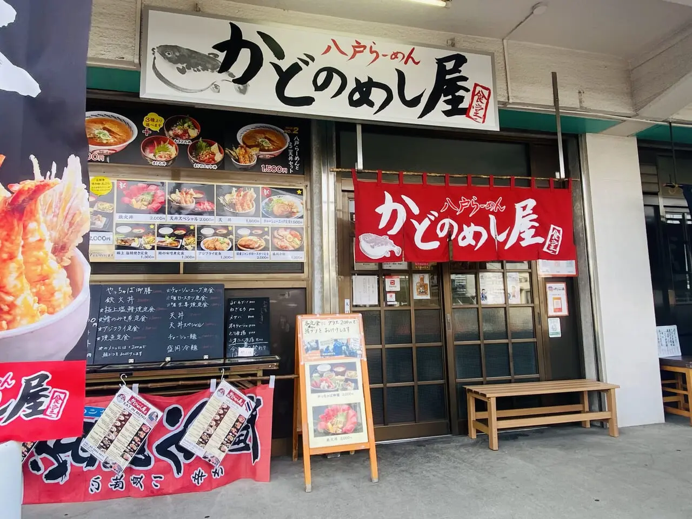

ABOUT US
市場のそばで、
魚をもっと身近に。
東京都中央卸売市場・足立市場の中にある海鮮食堂です。刺身、海鮮丼、焼き魚、天ぷらなど、魚介を中心とした料理をご用意。市場らしい活気のなか、朝からおいしいひとときをお楽しみください。
青森県八戸のご当地ラーメン「八戸ラーメン」も味わえます。
GALLERY
料理のひとこま
写真はクリックで拡大できます。
INFORMATION
店舗情報
ご来店前に、営業時間をご確認ください。
営業時間・定休日などは変更となる場合があります。最新情報は店舗へお電話でご確認ください。
FOR YOUR VISIT
ご利用案内
Google Maps
地図の埋め込み位置
CONTACT
お問い合わせ・
お電話でのご確認
営業時間や当日の状況は、お電話でお問い合わせください。